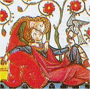

Křižáci
Hrad císaře Fridricha II. Castel del Monte stojí v Itálii nedaleko města L’Aquila.
|
SVĚTSKÁ LITERATURA
Období středověku bylo plné válek a soubojů, což se odrazilo hlavně v písemnictví světském. Zatímco v náboženském umění byl ideálem světec, v dvorské literatuře to byl rytíř. Také rytíř byl bohabojný křesťan a základní hodnotou pro něj byla čest. Na jedné straně byl rytíř odvážný bojovník, který oddaně sloužil panovníkovi a bránil křesťanskou víru, na straně druhé to byl citlivý muž, který by udělal vše pro ženu svého srdce, i kdyby byla manželkou někoho jiného. Alespoň tak to popisují středověká literární díla – hrdinské eposy, rytířská epika a dvorská lyrika.
Křesťanské ideály prostupovaly celou středověkou společnost. Křížové výpravy byla vojenská tažení, která podporoval papež i císař Svaté říše římské. Jejich cílem bylo osvobodit Jeruzalém, kde se nachází Boží hrob, od nadvlády muslimů. Také Panna orleánská (Jana z Arku) vedla ve jménu víry francouzská vojska proti Angličanům, a přestože byla upálena jako kacířka, došlo později k jejímu svatořečení.
Tyto vzory nebylo snadné následovat. Vždyť i samotní představitelé církve často porušovali Desatero nebo usilovali více o světské statky a požitky než o duchovní spásu. Proto se stali terčem posměšků a satir, které skládali hlavně žáci (studenti univerzit). Žákovská poezie je velmi rozpustilá a často zlehčuje i samotné tvůrce.
Cestopisnou literaturu ovlivnila víra v zázraky a fantastické světy.
|
Historie
Během středověku se mapa Evropy několikrát významně změnila. Na troskách západořímské říše vznikla řada barbarských států. Největšího vlivu dosáhla franská říše (482-843) během vlády Karla Velikého (768-814), ale brzy se rozpadla na 3 části (pozdější Francie a oblasti Itálie a Německa). Území Ostrogótů, Vandalů a Vizigótů získala nejdříve Byzanc, ale později ho dobyli Arabové. Ve zbytku Evropy vznikají menší státy (Anglie, Švédsko, Bulharsko, Čechy…).
Volený císař Svaté říše římské (založena Otou I. v roce 962) měl být protiváhou papeže, který usiloval o světskou moc. Křížové výpravy (1095-1270) proti muslimům skončily neúspěchem, vznikly pouze nové rytířské řády (templáři, johanité...).
|
Národní hrdinské eposy
Středověké eposy čerpají náměty z bájné historie evropských národů. Tyto veršované skladby vyprávějí o rytířích nebo panovnících. Byly složeny v různých jazycích a dlouho před zapsáním byly tradovány ústně.
Panovník Greatů Beowulf, hlavní postava stejnojmenného anglického eposu z 8. stol., zabije vodní obludu, která ohrožuje dánského krále, a umírá při souboji s drakem.
Španělská Píseň o Cidovi (12. stol.) vypráví o šlechtici, kterého král neprávem pošle do vyhnanství, ale když se vyznamená v boji proti Maurům, může se vrátit.
Německá Píseň o Nibelunzích (13. stol.) zpracovává germánské mýty. Kriemhilda zabije vraha svého muže Siegfrieda a dá popravit vlastního bratra, který mu ukradl poklad trpaslíků Nibelungů.
|
Píseň o Rolandovi
Ve Francii vznikla řada skladeb, které se nazývají chansons de geste [šansons d’žest] (písně o činech). Píseň o Rolandovi (12. stol.) z tzv. královského cyklu o Karlu Velikém má přibližně 4000 veršů. Vypráví o střetu s pohanskými Saracény, kteří napadnou zadní voj Karlova vojska. Roland jim hrdinně vzdoruje a dlouho odmítá přivolat pomoc. Karel se bohužel vrací pozdě – Roland i jeho muži jsou už mrtví. Rolandův nevlastní otec Ganelon je odsouzen za zradu a spiknutí se Saracény k trestu smrti.
Tato skladba vychází ze skutečné události. V roce 778 bylo Karlovo vojsko ve Španělsku opravdu napadeno, ale křesťanskými Basky...
|
Žakéři
Hrdinské eposy přednášeli zpaměti profesionální recitátoři za doprovodu hudebního nástroje. V Čechách se nazývali žakéři (z francouzského jogleors), v Anglii scopové, v Německu singři a v Rusku skoromoši.

Rolandova smrt
O čem pojednává ukázka?
Líbila se ti? Proč?
Španělský národní epos Lusovci napsal Luís de Camões až v 16. stol. Finský národní epos Kalevala sepsal Elias Lönnrot v 19. století.
|
Slované skládali junácké zpěvy o bojích s Turky (Kralevic Marko) a byliny – písně o ruských bohatýrech (Ilja Muromec, Čurila Plenkovič…), kteří bojovali s Tatary nebo démony.
Ruský epos Slovo o pluku Igorově je zřejmě padělkem (stejně jako český Rukopis královédvorský a zelenohorský).
|
Byliny
Ruské byliny byly původně veršované. Vyhledej jejich veršovaný překlad a srovnej ho s ukázkou.
|
Eddy
Skandinávskou mytologii zpracoval Islanďan Snorri Sturluson (1179-1241) v tzv. mladší Eddě, která zachycuje bájné příběhy od vzniku světa až do jeho konce (soumrak bohů) a popisuje pravidla skaldské poezie. Autor navazuje na anonymní starší Eddu, která obsahuje oslavné zpěvy na bohy a hrdiny. Sturluson psal také ságy (severské příběhy o panovnících a významných rodech).
|
Rytířská epika
Některé skladby s rytířskou tematikou byly natolik oblíbené, že se dočkaly celé řady zpracování v různých jazycích včetně staročeštiny. Byl to především životopis Alexandra Makedonského – Alexandreida a příběhy z tzv. bretonského cyklu (Tristan a Isolda, Parcival…).
Isolda
|
Thomas Malory: Artušova smrt
Nejúplnějším zpracováním příběhů o rytířích Kruhového stolu je román Artušova smrt, jehož autorem byl anglický šlechtic sir Thomas Malory [tomes melori] (1408-1471). Hlavní postavou je král Artuš, kterému pomáhá čaroděj Merlin, a jeho věrní rytíři. Patří mezi ně prosťáček Parcival, který se vydá hledat svatý grál (zázračná nádoba s Kristovou krví). Rytíř Tristan se omylem napije nápoje lásky a zamiluje se do Isoldy, ale jejich vztah končí tragicky. Rytíř Lancelot zase zatouží po Artušově manželce. Společenství Kruhového stolu se rozpadá a Artuš umírá v boji.
|

Artuš a Merlin
O čem pojednávají ukázky?
Znáš i jené příběhy z tohoto cyklu? Převyprávěj je co nejpodrobněji.
Který hudební skladatel napsal opery Prsten Nibelungův, Tristan a Isolda a Parsifal?
|
Dvorská (kurtoazní) lyrika vznikla ve 12. stol. na francouzských šlechtických dvorech v oblasti Provence [prováns], kde se mluvilo tzv. okcitánštinou. Najatí trubadúři (truvéři) skládali milostné písně, které vyjadřovaly touhu po společensky nedostupné nebo vdané dámě. Prvním trubadúrem byl šlechtic Guilhem de Petieu (1071-1126), ale autoři písní se rekrutovali ze všech společenských vrstev. Psali králové (Richard Lví srdce), měšťané, kněží i ženy. V Německu se jim říkalo minnesängři.

|
Dvorská lyrika
Milenci nepočítali s tím, že by jejich cit mohl být opětován, protože si zcela záměrně zvolili za předmět své touhy nedostupnou ženu. Středověkým ideálem byla čistá láska a vrcholným milostným prožitkem bylo utrpení a soužení.
|
Jaufré Rudel (1125-1148)
„Jaufres Rudels de Blaia byl velmi ušlechtilý muž, princ z Blaia. Zamiloval se do hraběnky z Tripolisu, aniž ji kdy viděl, jen pro to, jak dobře o ní mluvili poutníci vracející se z Antiochie. Složil o ní mnoho písní s dobrými melodiemi a se špatnými slovy. A jelikož ji chtěl vidět, přijal kříž a vyplul na moře. Na lodi však onemocněl a byl odvezen do Tripolisu, pokládán za mrtvého. Oznámili to hraběnce, ona přišla k jeho lůžku a objala ho. Pochopil, že je to ona. Ihned se mu vrátil sluch a dech a začal chválit Boha za to, že ho zachoval při životě až do chvíle, kdy ji mohl spatřit. A tak zemřel v jejím náručí. Ona jej dala pochovat s velkou slávou v domě Templu a potom, téhož dne, vstoupila do kláštera z bolesti, již cítila nad jeho smrtí.“
Toto je vida (středověký životopis trubadúra). Co si myslíš o Rudelovi?
Jak si představuješ ideální milostný vztah?
|
Román o růži
Rytíř a dáma jeho srdce
|
Guillaume de Lorris: Román o růži
Ideál kurtoazní lásky popsal francouzský šlechtic Guillaume de Loris [gijóm de loré] ve veršovaném Románu o Růži (1236). Hrdina této alegorické skladby prožívá sen, ve kterém se dostane do zahrady Lásky, kde objeví Růži (symbol ideálního ženství). Díky šípům boha Lásky k ní zahoří nesmírnou touhou, chce Růži utrhnout, ale brání mu v tom její strážci – Hrozebník, Stud, Zlolajník a Bázeň. Neposlechne rady Rozumnosti a s Venušinou pomocí získá vytoužený polibek. Žárlivost ale vystaví kolem Růže pevný hrad.
Napiš milostnou bádeň nebo píseň.
|

Trubadúr předává milostný list.

|
Satira
Od 12. stol. se rozvíjí nový satirický žánr – fabliaux [fablijo]. Jde o krátké veršované příběhy, které vznikaly hlavně v městském prostředí. V satirickém Románu o Lišákovi vystupují místo lidí zvířata. Na mušku si bere rytířské ideály i náboženské obřady. Podvodník a násilník Lišák zneužívá důvěřivosti vlka Yzengrina a dalších postav ve svůj prospěch.
Jakou poezii skládají studenti dnes?
|
Žákovská poezie
Satiře se věnovali hlavně žáci univerzit, kteří skládali rozverné písně o nesnázích studentského života a nic jim nebylo svaté. Typickým příkladem jejich tvorby je tzv. makarónská poezie, která je založena na střídání latiny s jiným jazykem. Žáci také psali parodie na středověké spory (Svár vody s vínem) nebo kázání (Kázání Archipoetovo). Jejich tvorba se označuje termíny žákovská poezie nebo vagantská literatura.
|
Carmina Burana
Zpěvník Carmina Burana (13. stol.) obsahuje žákovské, milostné, pijácké i duchovní písně. Novodobým zpracováním ho proslavil německý skladatel Carl Orff (1895-1982).
Gaudeamus igitur!
Gaudeamus igitur,
juvenes dum sumus!
Post jucundam juventutem,
post molestam senectutem,
nos habebit humus!
Znáš tuto latinskou píseň?
Jak pokračuje?
Umíš ji přeložit?
|

Marko Polo u chána Kublaje
Nakresli ilustraci k Mandevillovi.
Popiš po vzoru Mandevilla návštěvu neexistující země.
|
Cestopisy
Život ve vzdálených zemích barvitě líčily středověké cestopisy. Benátčan Marko Polo (1254-1324) se při svých obchodních cestách dostal až do Číny na dvůr chána Kublaje. Zážitky z cest nadiktoval spoluvězni Rustichellovi v Janovském vězení. Přestože lidé považovali jeho vypravování za přehnané, Milion byl záhy přeložen do latiny a dalších jazyků. Tzv. Mandevillův cestopis je autorovi připisován omylem. Ať už ho napsal anglický lékař John Mandeville (1300-1372), nebo někdo jiný, stejně se zbytečným cestováním nenamáhal. Pouze přeložil do latiny fantastické příběhy námořníků nebo si všechno vymyslel…
|
Mandevillův cestopis

Ilustrace k Milionu Marka Pola

Ilustrace k Mandevillovu cestopisu dokládá autorovu nespoutanou fantazii.
|
Internetové stránky
Carmina burana, Carl Orff
Rytíři, zajímavosti
Wolfram von Eschenbach: Parzival, ilustrovaný rukopis
Le roi Charles V et son temps (1338-1380)
Trubadúrská poezie, ukázky
Artuš, informace
Runy, informace
Ženatová: Středověká francouzská hrdinská epika a její odraz v české literatuře, diplomová práce

Runový nápis na kameni
|
Doporučená četba
Bohatýrské byliny, přel. M.Vodičková, Praha 1986
Cestopis tzv. Mandevilla, Praha 1963
Guillaume de Lorris: Román o Růži, přel. O.F.Babler, Praha 1977
Hrdinské legendy staré Francie, přel. V.Cibula, Praha 1989
Hrdinské zpěvy starého Španělska, přel. V.Cibula, Praha 1989
Hulpach, Vladimír: Příběhy kruhového stolu
Hulpach, V.: Ossianův návrat
Hulpach, V.: Kralevic Marko
Kalevala, přel. J.Holeček, Praha 1953
Kniha pravé lásky, přel. A.Přidal, Praha 1979
Malory, Thomas: Artušova smrt (3 svazky), Jota
Píseň o Cidovi, Praha 1994
Píseň o Nibelunzích, přel. J.Pokorný, Praha 1974
Píseň o Rolandovi, přel. J.Pelán, Praha 1986
Písně žáků darebáků, přel. R.Mertlík, Praha 1971
Polo, Marko: Milión, přel. M.Mattušová, SNKLHU, Praha 1961
Přátelé, přiléhavý složím vers, Písně okcitánských trubadúrů, přel. Prokop, Horváth, Argo, Praha 2001
Román o Lišákovi, přel. O.F.Babler, Praha 1973
Skandinávské ságy, přel. L.Heger, Praha 1962
Slovo o pluku Igorově, přel. H.Vrbová, Praha 1977
Snorri Sturluson: Edda, Sága o Ynglinzích, přel. H.Kadečková, Praha 1988
Srdce ve mně sténá, přel. Frynta, Kopta, Praha 1970
Vzdálený slavíkův zpěv, přel. V.Černý, Praha 1963
Zeyer, Julius: Karolinská epopej
Zeyer, Julius: Román o věrném přátelství Amise a Amila
|
Připrav si referát o některé z uvedených knih nebo internetových stránek.
Filmy
O třech rytířích, krásné paní a lněné kytli, režie V.Drha

Stránka ze zpěvníku Carmina Burana
|
|